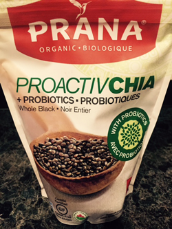

Benefits of Chia Seeds
 Lose Weight Without Starving
1. Lose Weight Without Starving
The Chia Seed is a dieter’s dream come true. The tiny, healthy seeds can be made to taste like whatever you want, and their unique gelling action keeps you feeling full for hours. Hunger is a main enemy of real weight loss, and you don’t want to fight it with jittery expensive pills. When a chia seed is exposed to water, it forms a coating of gel, increasing its size and weight. Since the gel made of water, it has no calories. It’s also difficult to remove from the seed, meaning that it helps your body think it is full, without adding calories!
2. Balance Blood Sugar
Keeping balanced levels of blood sugar is important for both health and energy. Blood sugar may spike after meals, especially if you eat high-starchy foods or sweets. This can lead to ‘slumps’ in your day where you feel tired and out of energy. By balancing your blood sugar, you not only lower your risk for type 2 diabetes, but you also ensure steady, constant energy throughout your day. But how does the Chia Seed help with this? Both the gelling action of the seed, and it’s unique combination of soluble and insoluble fiber combine to slow down your body’s conversion of starches into sugars. If you eat chia with a meal, it will help you turn your food into constant, steady energy rather than a series of ups and downs that wear you out
3. Help Prevent Diverticulitis
With the abundance of over-processed foods and white flour on the market today, rich sources of fiber are harder to come by. These foods of convenience have contributed to the rise of diverticulitis. Irregularity is a big factor in this risky condition. To help ensure regularity, you need plenty of soluble and insoluble fiber in your diet. If you don’t want to eat celery, and whole-grain everything…or piles of bran flakes, the Chia Seed is here to help. Each seed is coated with soluble fibers which aid its gelling action. The exterior of the seed is protected by insoluble fiber. The insoluble fiber is unable to be digested (it does not contribute any calories, or break down) so instead, it helps keep food moving smoothly through the digestive process. Soluble fiber, and the gel coating of the seed keeps the colon hydrated and ensures the easy movement of food.
4. Add healthy omega-3 oil to your diet
Omega-3 oil is usually thought of as “that healthy stuff in fish”. But, what if you don’t want to eat fish every day? What if you’re a vegetarian, or simply worried about pollution adding harmful substances to your fish dinner? Chia is the richest plant-source of this healthy oil. By weight, chia contains more omega 3 than salmon, and it still tastes like whatever you want! Omega 3 oil is important in heart and cholesterol health. It’s also recently been targeted as a weight-loss helper. USA Weekend magazine also reports on a study where overweight dieters who included omega 3s in their eating plan lost 2 more pounds monthly than the control group, who did not.
5. Feel more energized all day long
Don’t want to feel like taking an afternoon nap? Your energy levels have a lot to do with what you eat. Chia is one of nature’s highest plant-based sources of complete protein. Usually protein from items like peanut butter and some beans are incomplete, meaning you have to combine them with other foods to get the full benefit. Not Chia though, it’s protein is complete to raise your energy levels. The combination of complete protein, vitamins, minerals and blood-sugar balancing gel all work together to make sure you have steady, never jittery energy.
6. Bake with less fat
Do you enjoy making baked goods at home, but hate all the butter and oil that has to go into them? Chia gel can substitute for half the butter in most recipes! The food will bake the same and taste the same (or better) from the addition of the chia gel. All you need to do is divide the amount of butter or oil in half, and then use the same amount of chia gel to fill in. The anti-oxidants in chia can even help keep the food tasting fresh longer. Everything from cookies to cakes to muffins, pancakes and waffles can be made with chia gel as your butter replacement. Which recipe will become your new favorite?
7. Add age-defying anti-oxidants
Anti-oxidants have been in the news lately due to their super healthy benefits. You know that blueberries and several exotic fruits (that aren’t always in season) have them, but did you know that chia is extremely high in anti-oxidants too? These helpful substances are what makes the Chia Seed stay fresh for so long. At room temperature, they’ll stay fresh and ready to eat for over two whole years! And that’s all without a single chemical or preservative. This amazing ability is not found in other seeds like flax or sesame, because those seeds don’t have the same rich anti-oxidant content. Anti-oxidants help prevent free-radical damage in your body. Free radicals lead to problematic conditions such as premature aging of the skin and inflammation of various tissues. Fight free radical damage by staying fresh and healthy with nature’s anti-oxidant powerhouse.
8. Cut cravings for food
Being deficient in minerals or vitamins can create a craving for food. For example, if you’re low on calcium, you may feel compelled to eat lots of cheese and ice cream. This happens because your body knows that cheese is a source of calcium, and it hasn’t been getting enough. But what if dairy and whole milk are a “Diet don’t”? You can always add calcium to your food by sprinkling on the chia. By weight, chia has more calcium than whole milk. It also has magnesium and boron, essential trace minerals used in the absorption of calcium and other vitamins. By balancing your vitamins and minerals with chia, you can curb cravings that might tempt you.
9. You can pack in more flavorful punch
How can a seed with NO flavor help the foods you already like to love taste better? First, because they have no taste of their own, chia seeds will never cover up or add to the flavor of your food. Second, when the seeds hydrate, they magnify the taste of whatever they were added to. Put them in pudding? Chocolaty! Swirl them into a smoothie? Fruity! The same thing goes with dressings, dips, salsas, sauces and more. These two factors combine to let chia seeds take on the taste of whatever you add them to. They distribute and never dilute, the flavors you love.
10. Save your money
Why should eating less cost you more? You already know diet pills are expensive, and ‘box meal plans’ can run up to $500.00 a month. If you’re buying ‘calorie counting packs’ or other individual portions in the store, you can also end up paying more because more preparation and materials go into these foods. More than enough chia for 1 month costs less than a dollar a day. You can use as much or as little as you want to achieve your own desired results. There are no preparations required for these simple seeds. They’re always safe and 100% chemical free. A measuring spoon is all you’ll need when you’re ready to take advantage of chia for yourself. It doesn’t get any easier or more inexpensive